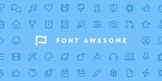

W3schools
W3Schools es un sitio web educativo muy popular para aprender tecnologías web en línea. Fue lanzado en 1999 por la empresa noruega Refsnes Data. El nombre “W3Schools” proviene de la World Wide Web
El sitio ofrece tutoriales y referencias sobre una amplia variedad de tecnologías web, incluyendo HTML, CSS, JavaScript, SQL, PHP, Python, y muchas más. Además, cuenta con un editor de código en línea llamado “TryIt Editor”, donde los usuarios pueden escribir y probar su código directamente en el navegador
FontAwesome
Font Awesome es una biblioteca de iconos vectoriales y estilos CSS que se utiliza para agregar iconografía a sitios web y aplicaciones. Fue creada por Dave Gandy y es muy popular por su facilidad de uso y su amplia colección de iconos
Algunas características clave de Font Awesome incluyen:
-
- Gran colección de iconos:
- Ofrece miles de iconos que se pueden utilizar en proyectos web.
-
- Escalabilidad:
- Al ser vectoriales, los iconos se pueden escalar a cualquier tamaño sin perder calidad.
-
- Compatibilidad:
- Funciona bien con la mayoría de los navegadores y frameworks, como Bootstrap.
-
- Personalización:
- Los iconos se pueden estilizar fácilmente con CSS para cambiar su color, tamaño, sombra, etc.
Font Awesome es una herramienta muy útil para desarrolladores web que buscan mejorar la apariencia y la usabilidad de sus sitios y aplicaciones.